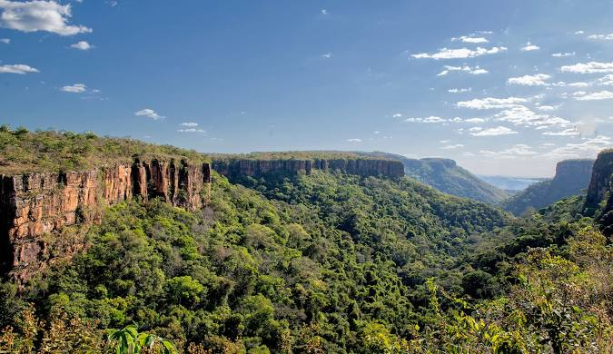

Mato Grosso é um estado situado na Região Centro-Oeste do Brasil, conhecido por sua vasta extensão territorial e grande diversidade natural, incluindo o Pantanal e o Cerrado. O estado é um dos maiores produtores de grãos, especialmente soja, milho e algodão, além de ter uma forte atividade na pecuária. Cuiabá, sua capital, é um importante centro comercial e cultural. Mato Grosso também é um destino turístico, com atrações naturais e rica biodiversidade.
 Voltar